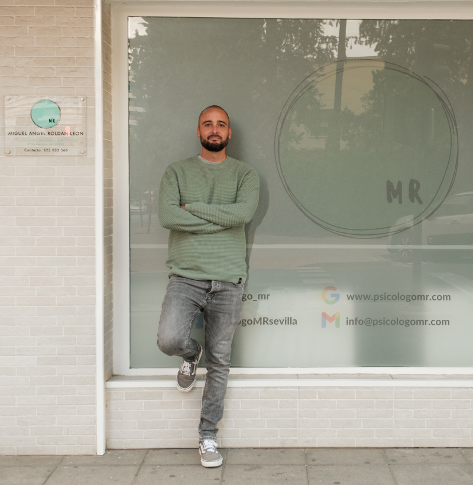

Escuchar sin juzgar
Crear un espacio en el que puedas hablar con libertad, incluso de aquello que todavía cuesta ordenar o explicar.
Sobre mí
Soy Miguel Ángel Roldán, psicólogo general sanitario. Desde 2014 acompaño a personas, parejas y familias a comprender lo que les ocurre y construir cambios que puedan reconocer en su vida.

Mi manera de entender la terapia
Entiendo la terapia como un trabajo compartido. Tú aportas tu historia, tus preguntas y aquello que quieres cambiar; mi responsabilidad es ofrecerte un espacio seguro, una mirada profesional y una dirección clara.
Trabajo desde un enfoque integrador, combinando recursos cognitivo-conductuales, sistémicos y constructivistas para adaptar el proceso a cada persona y no al revés.
“La terapia cobra sentido cuando lo que comprendes dentro de la consulta empieza a transformar lo que haces fuera de ella.”
Currículum profesional
La formación aporta criterio; la experiencia enseña a escuchar cada historia sin dar nada por supuesto.
Inicio de una trayectoria centrada en comprender el comportamiento, las emociones y las relaciones humanas.
Formación avanzada para comprender la relación entre bienestar psicológico, salud y contexto vital.
Formación orientada a comprender los vínculos, la comunicación y las dinámicas que mantienen los conflictos.
Acompañamiento a personas, parejas y familias desde una perspectiva integradora y adaptada a cada caso.
Habilitación sanitaria y profundización en evaluación, intervención y promoción de la salud psicológica.
Lo que guía mi trabajo
Crear un espacio en el que puedas hablar con libertad, incluso de aquello que todavía cuesta ordenar o explicar.
Definir objetivos comprensibles y revisar el proceso para que puedas reconocer qué está cambiando.
Elegir las herramientas según tu situación, tus necesidades y tu momento, evitando soluciones prefabricadas.
El primer encuentro
La primera sesión nos permite entender qué necesitas, resolver tus dudas y valorar si mi forma de trabajar encaja contigo.